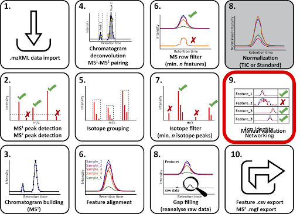
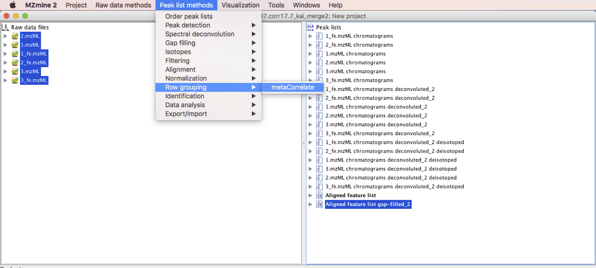
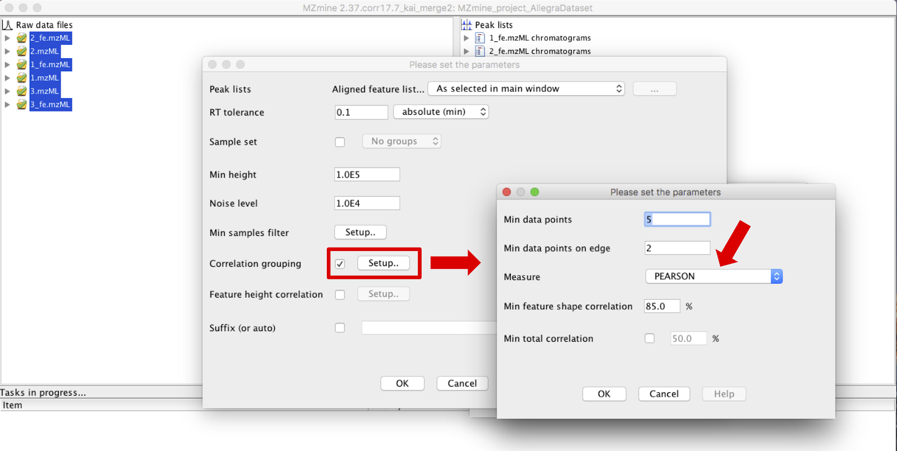
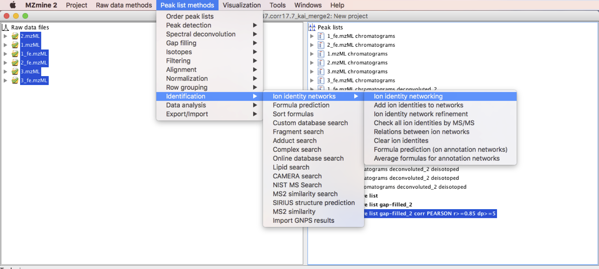
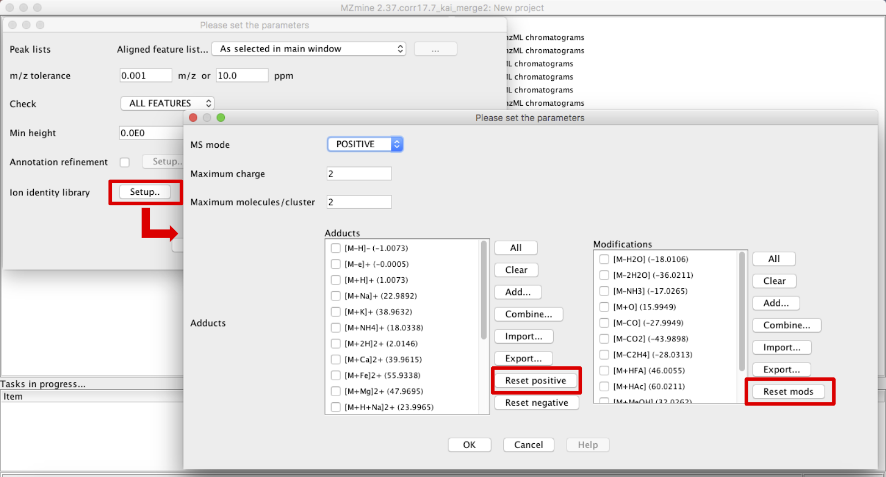
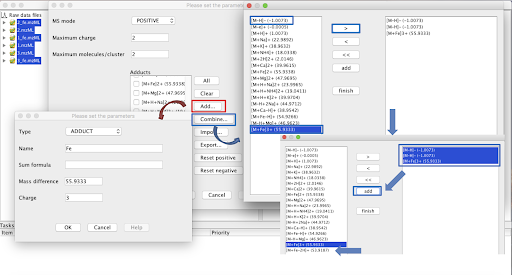
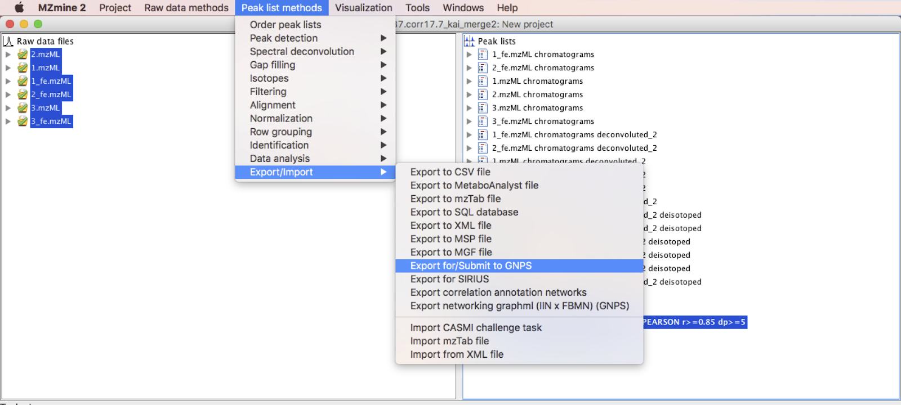
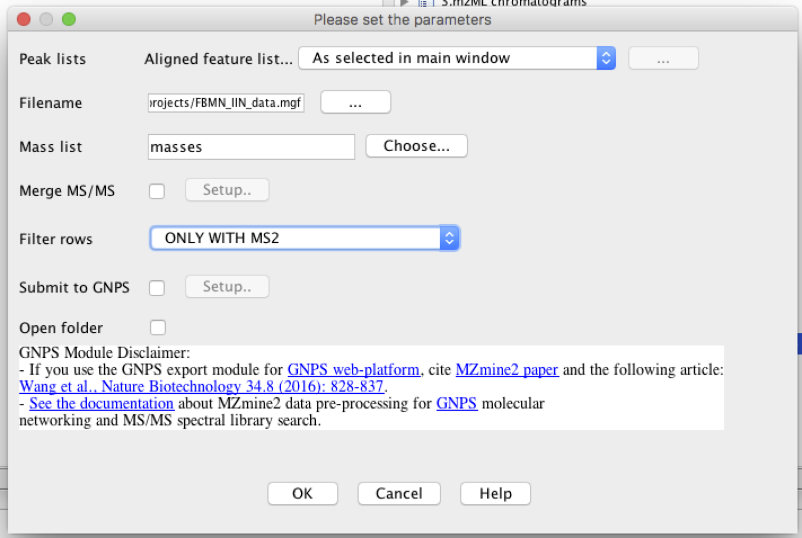

IIN with MZmine¶
Introduction¶
Ion Identity Network (IIN) is a computational method based on LC-MS peak shape correlation analysis that allows to correlate different ions, including adducts, multimers and in-source fragmentation, that can be formed from the same molecule during the ESI ionization. This is an advanced option one might choose while processing data for Feature Based Molecular Network (FBMN). The supported tools for IIN are: MZmine, XCMS, and MS-DIAL.
You can find more information about IIN in this playlist.
Development and Installation¶
For Ion Identity Network with MZmine, download the MZmine software (MZmine-2.37.corr17.7_kai_merge2 version) available here.
Data Processing with MZmine for FBMN and IIN¶
The sequence of steps for data processing in MZmine are mostly shared with the data processing steps with MZmine for FBMN (from step 1. data import, to 7. gap filling / 8. normalization), however, before exporting to GNPS, some steps for IIN should be included to obtain edge annotations. The scheme below shows the steps involved in the IIN workflow with MZmine.

Processing steps for IIN with MZmine¶
Start the process with FBMN steps¶
Process you data similarly to steps 1 to 7/8 of the FBMN workflow.
Perform IIN specific steps¶
Step 9 - metaCorrelate¶
Once the last step of FBMN has been completed, the "aligned peaklist" must be selected to continue with IIN. Start by applying the metaCorrelate module, which will be used to search for correlating ions/features in different samples, scan events and MS levels.
Go to Menu: Peak list methods > Row grouping > metaCorrelate.

Parameters are defined in the pop up window of the module, and information regarding the RT tolerance, mininmum height and noise level should be entered considering the sample set selected and equipment used. Select box “Correlation grouping” and set the parameters according to what would fit better in the dataset.
IMPORTANT: it is not recommended to use less than 5 data points.
IMPORTANT: make sure that PEARSON measurement is selected. <-- check it.

Click on OK and a new feature list will be generated on the right panel.
At this point, the IIN should be built (it will be searching for adducts, in-source fragments and clusters in the dataset).
Step 10 - Ion Identity Networking¶
Go to Menu: Peak list methods > Identification > Ion Identity Networks > Ion Identity Networking. [IMPORTANT]: Make sure the aligned peaklist process with the metaCorrelate module is selected.

The “Check” parameter presents three options that can be used to check for adduct identities. The ion identity library can be used to select the adducts of interest and the molecules’ modifications. Click on “Reset Positive/Negative” and on “Reset Mods” to have access to the list available in MZmine. At this point, the ones more appropriate for each dataset should be selected.

In the case that, in addition to the most common adducts ([M+Na]+, [M+K]+, [M+H]+, [2M+H]+, etc), more specific ions are observed in the dataset and are not included in the software’s list, it is possible to create new ones by clicking in “Add…” and filling the required information. It is also possible to combine adducts to create a new customized one clicking in “Combine…”. In the case of a combination, the adducts present in the list should be added to the right panel, selected and then added again to the previous list.

This step can performed multiple times to append annotations from modifications that might be more specific ([M-H2O], [M-CO], etc) with different parameters.
Step 11 - Feature export for GNPS:¶
In this step, the 3 files required for running a IIN job on GNPS are going to be exported. It is similar to the exporting step with the FBMN workflow. The three files are: · The feature quantification table (.CSV file format), with LC-MS feature intensities; · The MS/MS spectral summary (.MGF file), with a representative MS/MS spectrum per LC-MS feature. The MS/MS spectrum correspond either to the most intense MS/MS found for the feature, or to the merged spectrum; · The annotation edge file (.CSV file), containing the additional edges annotated by IIN.
Go to Menu: Peak list methods > Export/Import > Export for/Submit to GNPS.
Note that you can use the "Submit to GNPS" option to start automatically a job on GNPS. See the FBMN documentation for more details.

Name the filename in .mgf format and choose filter rows only with MS2 data.

[IMPORTANT]: The additional steps included in MZmine for IIN are currently note saved when you save your project, therefore, once the data was processed, you have to export and save the files, otherwise after reopening the project in the futur, it will possible to export only the feature quantification table (.CSV file format), and the MS/MS spectral summary (.MGF file).
Step 12 - Run the FBMNxIIN job on GNPS¶
If you used the option "Submit to GNPS" your job should have been launched automatically on GNPS. If needed, clone the job with different parameters. Alternatively, you can upload your files via FTP and configure an FBMNxIIN job on GNPS.
Step 13 - Visualization in Cytoscape¶
The additional edges that IIN identified as adducts and in-source modifications are visualized in Cytoscape. See the the main FBMNxIIN page for more details.
Citations¶
This work builds on the efforts of our many colleagues, please cite their work:
For IIMN: Schmid R., Petras D., Nothias LF, et al. Ion Identity Molecular Networking for mass spectrometry-based metabolomics in the GNPS Environment. Nat. Comm. 12, 3832 (2021).
For FBMN: Nothias, L.-F., Petras, D., Schmid, R. et al. Feature-based molecular networking in the GNPS analysis environment. Nat. Methods 17, 905–908 (2020).
Page Contributions¶